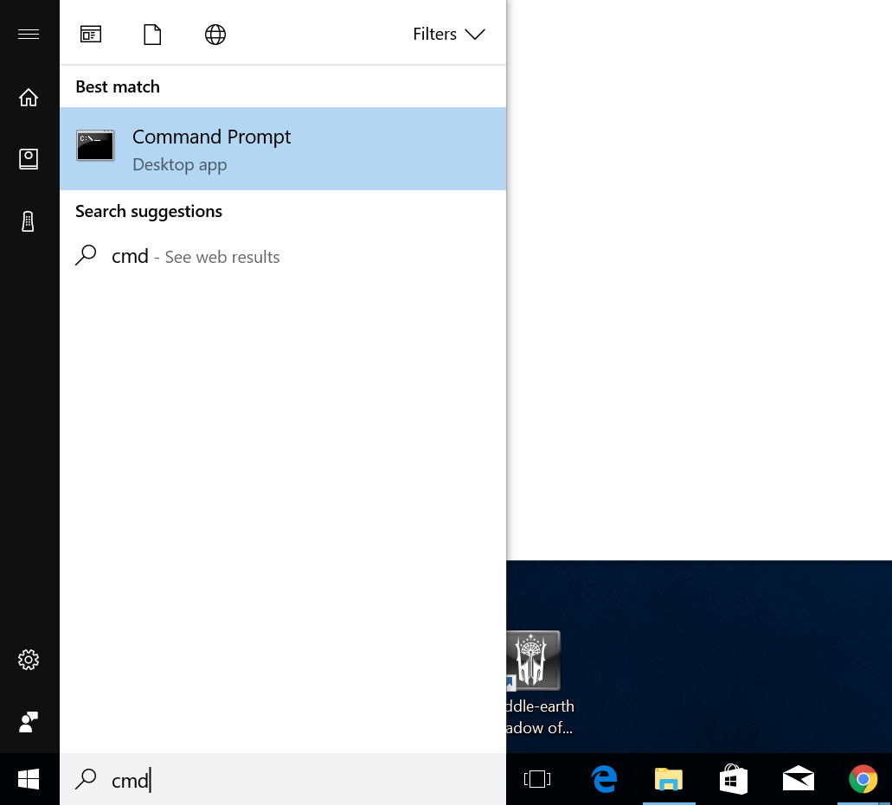
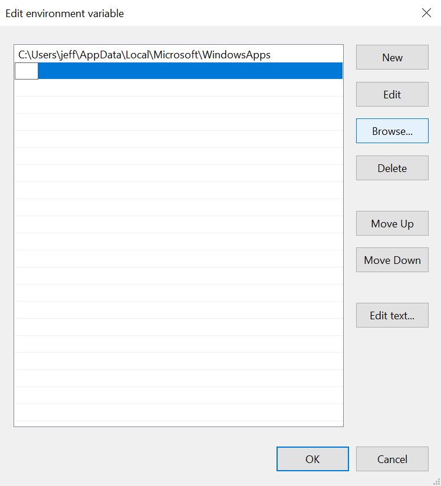

Install Java JDK 8 from Oracle (Windows instructions)
Linux/Ubuntu 16.04 instructions
We'll use the Java Development Kit version 8 provided by Oracle
Head over to the Oracle Download Page Here.
Or use Google:
After accepting the license, download the Windows x86 or x64 version of the SDK.
If you're not sure which, try the x64 version(the last link in the list) first.
{kind=link}
After the download finishes, open the installer by clicking on the download
indicator on your web browser or by going to your Downloads folder and
finding it there. You will then go through a standard looking installer.
Go ahead and click the Next > button the get the installation started:
{kind=link}
You don't need to change anything on the custom setup page, just click Next >
to continue:
{kind=link}
You don't need to change anything on the destination folder page, just click Next >
to continue:
{kind=link}
You should now see a couple progress pages like the following
{kind=link}
{kind=link}
When the installation is done you'll get a summary page like the following, go ahead and
click close.
{kind=link}
Now we need to add the JDK executable directory to our Path environmental variable. The
Path variable is used to track directories the OS, Windows in this case but it's very
similar on Linux and OSX, should look into for executable files. The JDK installer
doesn't do this for us so we'll have to do this ourselves.

For good measure, we'll test our Path first by trying to run the Java compiler, javac, in a terminal. Open a terminal by running or searching for cmd:
{kind=link}
Once the terminal has opened, type the command
javacand hit enter. You'll probably get a complaint from the terminal about not being able to find the command.
{kind=link}
{kind=link}
OK, so now we need to edit our Path. Start by opening the Control Panel

Click on and open the System and Security section
{kind=link}
Then click on and open the System section

Then click on and open the Advanced system settings section
{kind=link}
Now the System Properties dialog will be open. Open the Advanced tab, if it's not there
already, and click on the Environmental Variables button near the bottom.
{kind=link}
The Environmental Variables dialog will now be open. Click on and select the Path
variable row and then click the
Edit...Button
{kind=link}
Now you'll have the Edit environmental variable dialog open. Click the New Button, then
the Browse... button.

{kind=link}
{kind=link}
Now you'll need to browse to the location of our JDK bin directory and select it. It's
on the C: drive in Program Files under Java. Follow the clicks in the pictures below:
{kind=link}
{kind=link}
{kind=link}
{kind=link}
{kind=link}
{kind=link}
Once you've found and selected the bin directory in the JDK location click the OK button
on the Browse for folder dialog like in the image above.
Now you can see the new path entry in the Edit environmental variable dialog! Go ahead
and click OK to close the dialog.
{kind=link}
Click OK on the Environmental Variables dialog to close it too.
{kind=link}
OK, we're done with that. Go ahead click the OK button on the System Properties dialog
{kind=link}
Now, again let's test out the javac command in a terminal and see what the output is.
Launch the terminal with the cmd command and type javac then enter into the terminal
window:
If the output looks like the output in the image below, that is good! It's the command's
help output, we got it!
{kind=link}